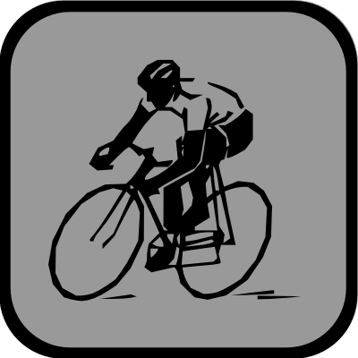
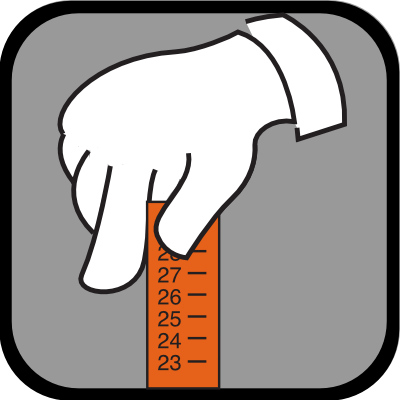
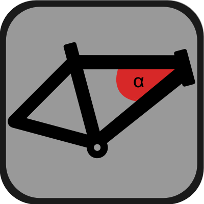
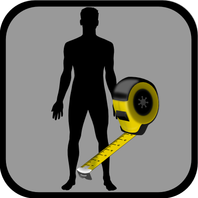

VisualCycle
Overview
Are you in the market for a custom frame and are afraid of choosing the wrong size ?
Worry no more, just use VisualCycle to simulate your dream bike or your custom frame.
VisualCycle is a stunning visual simulation of a custom cycle with you as the rider. All the relevant details are lovingly animated and of course, you can decide on all the frame dimensions and set your own body measures.
VisualCycle can also help you to to decide if that rare cycle on auction is fitting you.
Who benefits from using VisualCycle ?
Anyone who wants to buy a cycle or cycle frame which can not be tried and tested. This would include:
- custom frames build according to a customers unique body measures.
- bikes sold only on the internet
- used bikes on auction
What VisualCycle can do for you:
VisualCycle currently does simulate a rigid Mountainbike (MTB) with a diamond frame together with the detailed rider.
As a suspension fork in essence just adds a certain amount of sag (let`s say something like 15%), a suspension fork can be easily simulated by reducing the height of the fork stanchions.
A full suspension bike (fully) can not be simulated with the current version of VisualCycle, but it is planned for a future version.
Features of VisualCycle
- gorgeous visual simulation of a cycle plus you as a rider.
- insert your body measures into the simulation.
- find fitting saddle height and horizontal saddle position.
- change any frame parameter and watch the changes being instantly applied to the simulation.
- check on stand-over-height for any new frame dimension.
- touch and try the cycle, move limbs and cycle parts.
- extensive display of cycle measures, tube names and angles.
ScreenShots
Insert your own body measures
You can enter your own body dimensions directly into the simulation. VisualCycle can use these body dimensions to check against certain parameters of the simulated bike frame, like stand-over-height, saddle height etc.
Main Menu
Above: Screenshot of the main menu of VisualCycle.
The above screenshot shows the central point of access for VisualCycle. All functionality can be accessed in one of the submenus
or with the Menu button at the top right.
Submenus
-  - Cycle
-  - Body measures
-  - Cycle measures
-  - Standover height
- - Try_me
- - Settings